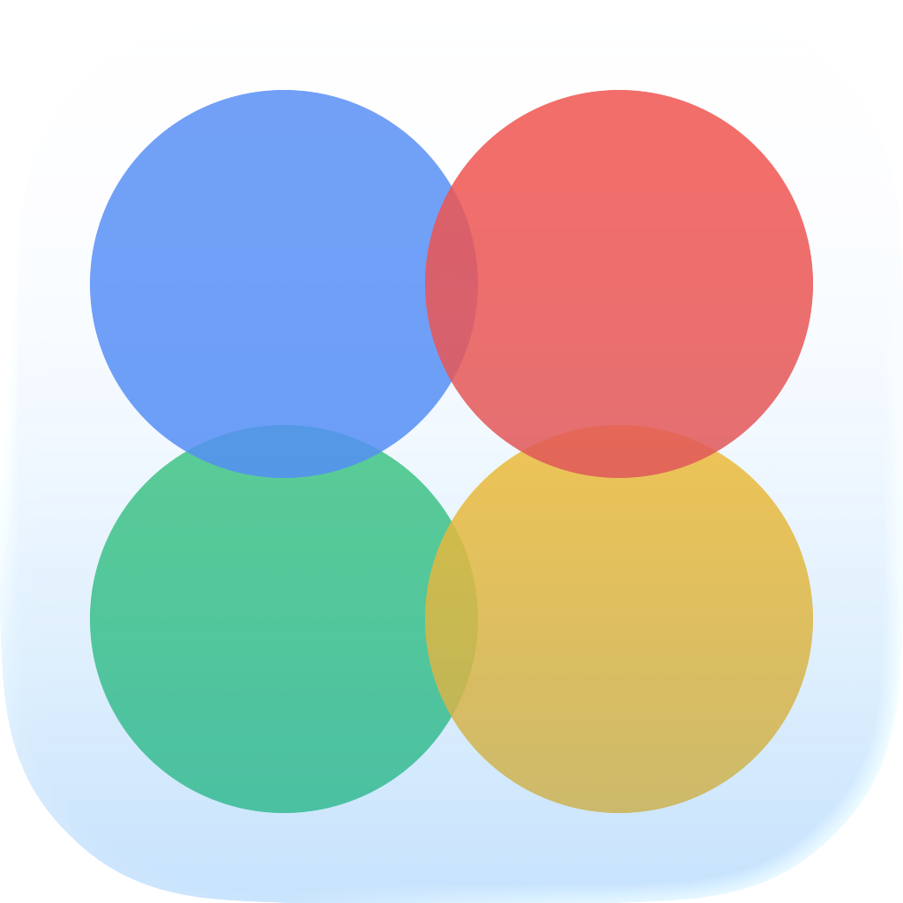

Native macOS image viewer
See the photo.
Photonic gets out of the way: open an image or folder, move fluidly through your photos, and zoom into every detail.

Fast by defaultOpen a photo directly from Finder or browse a whole folder.
Fluid inspectionSmooth wheel zoom, momentum panning, and keyboard navigation.
Focused viewingA native, translucent Mac interface with no catalog or editing clutter.